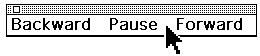
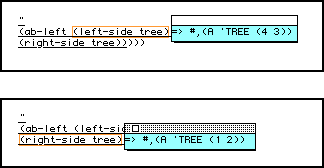
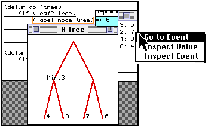
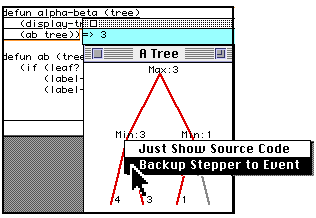
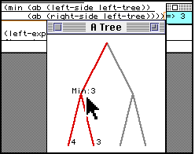
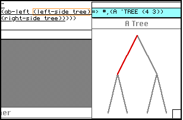
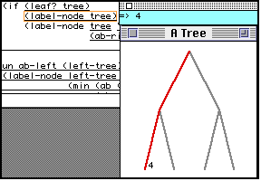
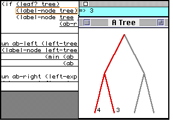
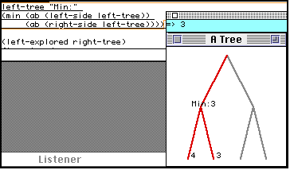
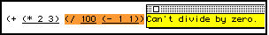

Henry Lieberman and Christopher Fry
Media Laboratory
Massachusetts Institute of Technology
Cambridge, Mass. USA
lieber@media.mit.edu
Harlequin, Ltd.
1 Cambridge Center
Cambridge, Mass. USA
cfry@harlequin.com
FIGURE 1 Opening frame of a QuickTime video demonstrating ZStep 94 prototype.
DYNAMIC FIGURE 1 (Complete QuickTime Movie, 2.8 mb).
Donald Norman [12] refers to the Gulf of Evaluation and the Gulf of Execution as the gaps that often occur between the user's intent, the actual effect of a command given to the computer, and the result. In programming, this manifests itself as the difficulty of understanding the dynamic behavior of a program from the static source code of the program. The primary cognitive task in debugging is forming a mental model of the correspondence between code and behavior.
Programming is the art of constructing a static description, the program code, of a dynamic process, the behavior which results from running the program. In that sense, it is analogous to composing music. The program code is like a musical score, whose purpose it is to cause the performer [in the programming case, a computer] to perform a set of actions over a period of time.
What makes programming cognitively difficult is that the programmer must imagine the dynamic process of execution while he or she is constructing the static description, just as a composer must "hear the piece" in his or her head, while composing. This puts a great burden on the programmer's short term memory. What makes programming even more difficult than composing is that a musical composition usually specifies a single performance, whereas a program may be executed in a wide variety of conditions, with different resulting behavior.
Many, if not most, routine program bugs result from a discrepancy between the programmer's imagining of the desired behavior in a given situation, and the actual behavior of the program code in that situation. [This would not be true only in the case of deep conceptual misunderstandings, where the program may actually perform as originally intended, but the programmer realizes that the original intention does not solve the problem.]
For the programmer, the problem of translating intent into program code corresponds to what Norman calls the Gulf of Execution. Interactive tools such as on-line context-sensitive help systems and syntax-directed editors can provide intelligent assistance in bridging that gap by relieving reliance on the programmer's memory of programming language details.
Once program code is written, the problem remains of verifying that the code written actually expresses the programmer's intent under all circumstances of interest. This is the Gulf of Evaluation. Interactive tools such as debuggers and program visualization systems can be invaluable in bridging that gap. Instead of trying to imagine how the events in a program unfold over time, why not have the machine show them to you?
We have designed a program debugging environment to explicitly support the problem solving methodology of matching the expectations of a programmer concerning the behavior of code to the actual behavior of the code. This environment is called ZStep 94, a descendent of the stepper described in [8].
Two principal activities in debugging that can be assisted by tools in the programming environment are instrumentation and localization. Instrumentation is the process of finding out what the behavior of a given piece of code is, the software analog of attaching oscilloscope probes to a hardware component. Traditional tools that assist instrumentation are trace, breakpoints, and manually inserted print statements: trace instruments all calls to a function, a breakpoint or print statement instruments a specific function call. The problem with using trace and breakpoints in debugging is that they require some plausible hypothesis as to where the bug might be, so you know where to place the instrumentation. They are not of much help when you have no idea where a bug might be, or there are too many possibilities to check individually.
Localization is the process of isolating which piece of code is "responsible" for some given undesirable behavior of a buggy program, without any prior knowledge of where it might be. Among traditional tools, a stepper is potentially the most effective localization tool, since it interactively imitates the action of the interpreter, and the program can in theory be stepped until the error is found.
However, traditional steppers have a fatal interface flaw: they have poor control over the level of detail shown. Since the programmer's time is too valuable to make looking at every step of an evaluation feasible, only those details potentially relevant to locating the bug should be examined. Typical steppers stop before evaluation of each expression and let the user choose whether or not to see the internal details of the evaluation of the current expression. But how can the user make the decision about whether to see the details of an expression if he or she doesn't know whether this expression contributes to the bug or not? This leaves the user in the same dilemma as the instrumentation tools -- they must have a reasonable hypothesis about where the bug might be before they can effectively use the debugging tools!
The solution adopted by ZStep 94 is to provide a reversible control structure. It keeps a complete, incrementally generated history of the execution of the program and its output. The user can confidently choose to temporarily ignore the details of a particular expression, secure in the knowledge that if the expression later proves to be relevant, the stepper can be backed up to look at the details. Thus, ZStep 94 provides a true localization tool.
There has been a considerable amount of past work on reversible program execution [1,3,8,9,11,15], but this work has concentrated on the details of minimizing the space requirements of the history and tracking side effects to data structures, both of which are important, but secondary to the user interface aspects which are the emphasis of this paper. It is important not only to "back up" variables to their previous values, but also to "back up" a consistent view of the user interface, including static code, dynamic data, and graphical output so that the user "backs up" their mental image of the program execution.
The reversible control structure aspects of ZStep 94 are discussed in more detail in [9]. We will address the issue of the computational expense of the history-keeping mechanism later.
ZStep 94's main menu uses a bi-directional "video recorder" metaphor. The single-arrow "play" and "reverse" correspond to single-step in a traditional stepper, and the "fast-forward" and "rewind" operation go from an expression to its value and vice versa, without displaying details.
FIGURE 3. ZStep 94's "control menu"
It is important to note that ZStep 94's expression-by-expression stepping is not the same as statement-by-statement or line-by-line stepping found in many steppers for procedural languages. Individual lines or statements may still contain complex computations, and it is a severe limitation on the debugger if the granularity cannot be brought down finer than a statement or line.
The two "graphic step" operations G> and G< are an innovation that lets the user step the graphic output of the program back and forth, rather than control the stepper in terms of the expressions of the code. This will be discussed below.
ZStep 94 also has a "cruise control" mode, in which the stepper can run continuously, in either direction, without user intervention. The distance of the cursor from the center of the panel controls the speed. The user can stop it at any point when an interesting event appears, and run the stepper in either direction at that point.
 FIGURE 4. ZStep 94's "cruise control"
A crucial problem in designing an interface for program debugging is maintaining the visual context. Because programming is an activity in which many items of interest have complex temporal and spatial relationships to other items, it is important to present each item with its context clearly identified.
Items such as the expression currently being evaluated, the value of a variable, or graphics drawn by the code may have almost no meaning outside their proper context. The programmer wants to know where in the code that expression was evaluated, which instance of the code was it, when did the variable have that value, how did that graphic appear on the screen?
If the item and its visual context are spatially or temporally separated, a new cognitive task is created for the user -- matching up the item with its context. This new cognitive task creates an obstacle for debugging and puts additional burden on the user's short term memory. Linear steppers or tracers that simply print out the next expression to be evaluated create the task of matching up the expression printed to the place in the code where that expression appears. "Follow the bouncing ball" interfaces that point to an expression and print out a value in another window lead to "ping-ponging" the user's attention between the code display and the value display.
Because most programmers input their code as text in a text editor, the primary mental image of the program becomes the text editor's display of the code. Thus, to preserve the WYSIWYG property, ZStep 94 always use the text editor's display to present code during debugging. To maintain visual continuity, it is important that the exact form of the user's input be preserved, including comments and formatting details, even if they are not semantically significant. As the interpreter's focus moves, the source code of the expression that is about to be evaluated, or has just returned a value, is highlighted.
FIGURE 5. The value window moves through the code
Steppers always have the problem of how to show code expressions and their values simultaneously. In ZStep 94, as the editor's focus moves from expression to expression, we use a floating window to display the value. The display of the value is always exactly aligned with the expression to which it corresponds, so that the visual association between an expression and its value is apparent. The floating value window is colored light green to indicate if the expression is about to be evaluated, light blue to indicate a return value, or yellow if it has caused an error.
Earlier versions had used the idea of substituting the value for the code in place. This keeps the user's attention focused on the point of execution, but loses the original expression. Another version maintained two windows, one with the original code, the other with the substituted values, but this was affected by the "ping-pong" problem. All these are valid approaches, but we prefer the floating value window as the best compromise between visibility and maintaining visual continuity. We might also explore making the values window translucent, to reduce the effect of obscuring the code underneath.
Our approach is to integrate instrumentation tools directly into the stepper. We provide two facilities for pointing at a piece of code and inquiring about the behavior of the code. Rather than inserting breakpoints or print statements into the actual code and resubmitting the code to the interpreter or compiler, we let the user simply point at the desired expression, then run the stepper until that expression is reached. This is called Step to Mouse Position. This is like a breakpoint, but an advantage is that the stepper is runnable both forward and backward from the point where the program stops, and all information about the computation remains available.
FIGURE 6. ZStep 94's pull-down menu
Even more dynamic is Show Value Under Mouse, which is like a continuously updated Step to Mouse Position. The user simply waves the mouse around the code, without clicking, and the expression currently underneath the cursor displays its value window. Unlike Step to Mouse Position, this works only for values that have been previously computed and are quickly retrievable, and does not run the stepper past the current execution point.
We also provide a facility to track the behavior of a given expression over different execution histories. The operation Current Form History allows the user to point at an expression and bring up a menu of the past values of that expression.
FIGURE 7 The history of values of an expression
Another history facility is the Values Filter, which brings up a menu of all returned values up to that point satisfying a condition. Clicking on one of the values returns the stepper to the corresponding event. We could also provide a filter on the expression executed, which would correspond to a traditional trace.
One of the most essential, but also most difficult, tasks in debugging is being able to reason backward from the manifestation of some buggy behavior to the underlying cause. This is especially problematic when the program in question itself has a graphical user interface. The programmer must work backwards from an incorrect user interface display to the code responsible. Traditional tools do not make any special provision for debugging programs with graphic output; worse, the user interface of the debugger often interferes with the user interface of the target program itself, making it impossible to debug!
ZStep 94 maintains a correspondence between events in the execution history and graphical output produced by the current expression. Considerable care is taken to assure that the graphic output always appears consistent with the state of execution. When the stepper is run forward or backward to a certain point in the execution, the graphic display is also moved to that point.
Furthermore, individual graphical objects on the display also are associated with the events that gave rise to them. We allow the user to click on a graphical object, such as a tree node in our example, and the stepper is automatically positioned at the event which drew that node. Just as in our other operations like Step to Mouse Position, the stepper is active at that point, and the program can be run forward and backward from that point.
FIGURE 8.
FIGURE 9.
Clicking on a graphical object backs up the stepper to the event which drew it
In reasoning from the behavior of the program to the code, it is useful to be able to step the behavior rather than step the code. The user conceptualizes the behavior of the program as a set of graphic states that unfold over time, as the frames of an animation. The increments of execution should be measured in terms of the animation frames rather than execution of code, since events that happen in the code may or may not give rise to graphic output.
ZStep 94 provides two operations, Graphic Step Forward and Graphic Step Backward, that run the stepper forward or backward, respectively, until the next event happens that results in significant graphic output. Below, each graphic step results in an exploration of the next branch of the tree.
FIGURE 10.
FIGURE 11.
FIGURE 12.

FIGURE 13. Four successive "graphic steps"
Each graphic step runs the stepper forward or backward until it is pointing at the event which was responsible for the graphic output, and the stepper remains live at all times. While stepping non-graphic code, the effects of previous graphic operations remain visible, just as they do in a normally-running program.
We could also provide graphic step operations analogous to "graphic fast forward" and "graphic rewind". Because the stepper can be run from either the code or the graphics at any point in time, the user can easily move back and forth between the different points of view.
ZStep 94 has a unique approach to dealing with execution errors. Traditionally, errors during program execution are disruptive. They either print an error message and halt execution, or put the user into a breakpoint loop, from which special commands can examine the error, and the stack can be inspected. In either case, errors disrupt execution and often lose information about partial computations which may have finished correctly.
 FIGURE 14. ZStep 94 displays an error message
In ZStep 94, an expression which results in an error simply displays the error message in place of the value of the subexpression most relevant to the error. The value window is colored yellow to indicate the error condition. The stepper remains active, all intermediate values are preserved, and the program can be run backward to examine the history that led up to the error.
The current version of ZStep 94 has no independent display of the stack, though the user can flip through events representing containing computations manually, whether or not an error has occurred. Previous ZStep versions had a stack display that was updated continuously with each event, animated in tandem with the source code animation. Each stack frame was itself a menu item, and clicking it would return you to that frame.
What happens once an error is found? ZStep 94 facilitates the repair phase, since it leaves you in the text editor with the cursor pointing to exactly the code in need of repair. Further, you are then just one click away from restarting the entire computation after the edit. However, we cannot support restarting the computation from any point in ZStep's history after the edit, because editing a running program cannot guarantee consistency of the event data structures. However, we could imagine techniques that would allow conservative restart of the code, or at least warn you of potential difficulties.
{kind=link}
{kind=link}